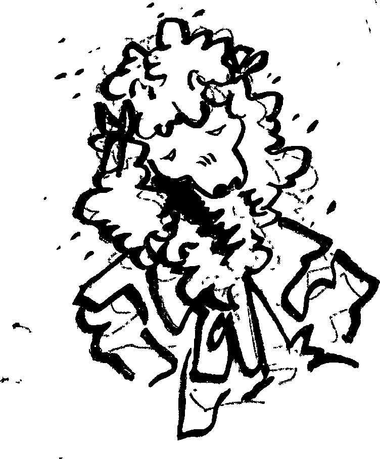
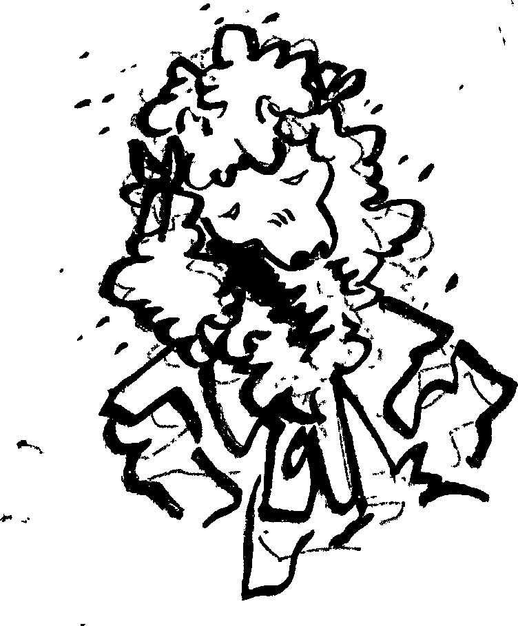

Stool
She left and came back with a brush, and, to my surprise, Fluffypants began to brush my fur. It was matted, she was ripping out knots left and right, but eventually the brush began to run smoothly through my fur. Why? Why didn’t I move? Why didn’t I object? I know I don’t have time for such frivolous things. But it felt nice., careful paws moving soft bristles through my fur. “You haven’t been taking care of yourself Tumbleweed. Just because you want to find someone, doesn’t excuse you from not looking after yourself.” “Biscuit is my priority.” “Of course, but making yourself miserable isn’t gonna help in that.” I don’t believe that.

 
